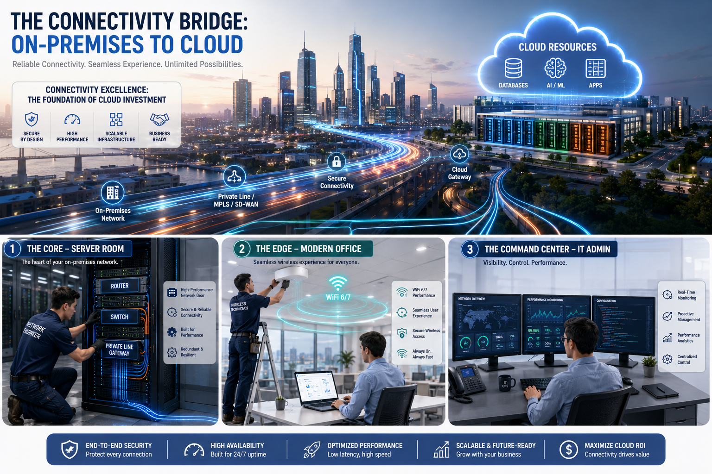

Một hệ thống Cloud thường gồm nhiều lớp dịch vụ. Khi Sales nhìn vào hệ thống CNTT của khách hàng, hãy bóc tách theo 9 nhóm dịch vụ chính để hiểu khách hàng đang dùng gì, thiếu gì và cần gì tiếp theo. Mỗi nhóm là một cơ hội tư vấn và bán thêm.
🏗️ Tổng quan kiến trúc theo lớp dịch vụ
9 nhóm dịch vụ sắp xếp theo vai trò trong kiến trúc tổng thể — từ nền tảng hạ tầng đến ứng dụng thông minh
AI, Data, IoT & DevOps
Lớp ứng dụng thông minh và tự động hóa — điểm khác biệt của Cloud so với hạ tầng truyền thống
AI/MLData AnalyticsIoTCI/CD
Monitoring & Management
Giám sát toàn bộ hệ thống — performance, cost, policy, automation
MetricsLogsAlertsCost Mgmt
Backup & Disaster Recovery
Bảo vệ dữ liệu và đảm bảo khả năng phục hồi khi sự cố xảy ra
SnapshotReplicationRPO/RTO
Security
Bảo mật workload — shared responsibility giữa nhà cung cấp và khách hàng
WAFSIEMDDoS ProtectionEncryption
Identity & Access Management (IAM)
Định danh và phân quyền — ai được truy cập gì, với quyền gì
MFASSORBACConditional Access
Networking
Kết nối workload với nhau, với on-premises và với Internet
VNet/VPCVPNLoad BalancerCDN
Database
Lưu trữ dữ liệu có cấu trúc và phi cấu trúc — managed hoặc tự vận hành
SQLNoSQLData WarehouseManaged DB
Storage
Lưu trữ dữ liệu file, object, disk — theo nhiều loại khác nhau
BlockObjectFile ShareArchive
Compute
Nền tảng — nơi ứng dụng, website, API, backend service được chạy
VMContainerServerlessKubernetes

📷 Vai trò của kết nối mạng trong Cloud Computing — từ Internet broadband, dedicated line, đến SD-WAN và kết nối hybrid. Connectivity là huyết mạch kết nối on-premises với Cloud.
🗂️ Chi tiết 9 nhóm dịch vụ
👆 Nhấp vào từng ô để xem chi tiết sub-services và ghi chú cho Sales
01 · Compute
Compute — Nơi chạy workload
Năng lực xử lý: VM, Container, Serverless, App Platform
| Loại | Cách hiểu | Use case điển hình |
|---|---|---|
| Virtual Machine | Máy chủ ảo giống server truyền thống | App cũ, ERP, middleware, Windows/Linux server |
| Container | Đóng gói ứng dụng để chạy linh hoạt | Microservices, CI/CD, cloud-native app |
| Kubernetes (AKS/EKS/GKE) | Điều phối container quy mô lớn | App nhiều service, cần scaling, rolling update |
| Serverless Function | Chạy code theo sự kiện, không quản lý server | Xử lý ảnh, API nhỏ, automation, event trigger |
| App Platform | Chạy web app/API không quản lý VM | Web portal, API backend, app nội bộ |
💬 Sales note: Khi khách hàng nói "tôi cần server" — hãy hỏi: "Để chạy ứng dụng gì?" Từ đó xác định VM, Container hay App Service là phù hợp nhất.
02 · Storage
Storage — Nơi lưu dữ liệu
Block, Object, File, Archive — mỗi loại có mục đích riêng
| Loại | Cách hiểu | Use case điển hình |
|---|---|---|
| Block Storage | Disk gắn vào VM như ổ cứng | OS disk, database disk, application disk |
| Object Storage | Kho lưu trữ lớn, truy cập qua API | Backup, archive, log, ảnh, video, data lake |
| File Storage | File share dùng giao thức SMB/NFS | Shared folder, app cần file share giữa nhiều server |
| Archive Storage | Lưu lâu dài, ít truy cập, chi phí thấp nhất | Hồ sơ lâu năm, log compliance, backup dài hạn |
💬 Sales note: Object Storage (Azure Blob, AWS S3) thường là điểm bắt đầu migrate dễ nhất — backup và log lên Cloud trước, giảm rủi ro và chi phí storage on-premises ngay.
03 · Database
Database — Quản lý dữ liệu
SQL, NoSQL, Managed DB, Data Warehouse — tự vận hành hay thuê managed?
| Loại | Cách hiểu | Use case điển hình |
|---|---|---|
| DB on VM | Cài SQL Server/MySQL trên máy ảo — tự quản lý | App legacy, yêu cầu kiểm soát tuyệt đối |
| Managed Relational DB | Cloud lo patching, backup, HA — chỉ quản lý data | Web app, ERP, hệ thống giao dịch — Azure SQL, RDS |
| NoSQL Database | Dữ liệu phi quan hệ, scale cao | App mobile, IoT, catalog, session, gaming |
| Data Warehouse | Phân tích dữ liệu lớn, BI, báo cáo | Báo cáo tổng hợp, dashboard, analytics — Synapse, Redshift |
💬 Sales note: "Đội IT của anh/chị đang mất bao nhiêu giờ/tuần để patch database và xử lý backup?" — Managed DB giải phóng thời gian đó.
04 · Networking
Networking — Kết nối & phân luồng traffic
VNet, VPN, Load Balancer, CDN, DNS, Firewall — lớp kết nối toàn hệ thống
| Thành phần | Chức năng | Khi nào cần |
|---|---|---|
| Virtual Network / VPC | Mạng riêng ảo cho workload trên Cloud | Luôn cần — là nền tảng kết nối |
| VPN / Direct Connect | Kết nối bảo mật từ on-premises lên Cloud | Hybrid Cloud, migration, private access |
| Load Balancer | Phân tải traffic cho nhiều server | Web app có lượng truy cập lớn, HA |
| CDN | Cache nội dung gần người dùng cuối | Website, media, phân phối toàn cầu |
| DNS | Phân giải tên miền, traffic routing | Tất cả hệ thống có domain |
| Firewall / WAF | Lọc traffic độc hại, bảo vệ ứng dụng web | Ứng dụng public, compliance, security |
💬 Sales note: Networking thường bị bỏ qua trong giai đoạn đầu tư vấn — nhưng đây là nơi phát sinh chi phí ẩn (data transfer, bandwidth). Hỏi sớm về yêu cầu kết nối on-premises và lưu lượng mạng.
05 · IAM
Identity & Access Management
Ai được truy cập gì, với quyền gì — nền tảng bảo mật của mọi hệ thống Cloud
| Khái niệm | Ý nghĩa | Tại sao quan trọng |
|---|---|---|
| User / Group / Role | Đơn vị cơ bản của định danh và phân quyền | Kiểm soát ai được làm gì trong Cloud |
| MFA (Multi-Factor Auth) | Xác thực nhiều bước — password + thiết bị/biometric | Giảm thiểu rủi ro bị chiếm tài khoản |
| SSO (Single Sign-On) | Đăng nhập một lần, dùng nhiều ứng dụng | Giảm ma sát cho người dùng, tập trung quản lý |
| RBAC | Phân quyền theo vai trò — không cho phép thừa quyền | Principle of Least Privilege — bảo mật chuẩn |
| Privileged Access | Quản lý tài khoản đặc quyền — admin, root, service account | Kiểm soát rủi ro từ tài khoản có quyền cao nhất |
| Conditional Access | Kiểm soát truy cập theo điều kiện (thiết bị, vị trí, risk) | Zero Trust — không tin tưởng mặc định |
💬 Sales note: IAM là layer bảo mật quan trọng nhất — hầu hết các sự cố Cloud đều do cấu hình IAM sai. Hỏi khách hàng: "Hiện tại anh/chị quản lý quyền truy cập hệ thống như thế nào?" để uncovering nhu cầu.
06 · Security
Security — Bảo mật workload
Shared responsibility — Cloud bảo vệ nền tảng, khách hàng bảo vệ cấu hình & dữ liệu
| Bên chịu trách nhiệm | Phạm vi bảo mật |
|---|---|
| ☁️ Nhà cung cấp Cloud (Security OF the Cloud) | Data Center vật lý · Physical security · Hardware · Hypervisor · Cloud platform nền tảng |
| 🏢 Khách hàng (Security IN the Cloud) | Cấu hình tài khoản · Phân quyền · Dữ liệu · Ứng dụng · Network security policy · Logging & Monitoring |
| Security Service | Chức năng |
|---|---|
| Defender / Security Hub | Trung tâm giám sát và phát hiện mối đe dọa |
| WAF (Web App Firewall) | Lọc tấn công vào ứng dụng web (SQLi, XSS, DDoS) |
| DDoS Protection | Bảo vệ hệ thống khỏi tấn công từ chối dịch vụ |
| Key Vault / HSM | Quản lý khóa mã hóa và bí mật an toàn |
💬 Sales note: Khi khách hàng nói "Cloud không an toàn" — hãy hỏi: "Hiện tại ai đang lo bảo mật vật lý data center cho anh/chị? Có đội bảo mật 24/7 không?" Nhà cung cấp Cloud lớn đầu tư hàng tỷ USD/năm vào security.
07 · Monitoring
Monitoring & Management
Giám sát toàn bộ hệ thống — performance, cost, health, compliance
| Loại | Cách hiểu | Giá trị cho khách hàng |
|---|---|---|
| Performance Metrics | CPU, RAM, disk, network — real-time và lịch sử | Phát hiện bottleneck, right-size tài nguyên |
| Log Management | Thu thập và phân tích log từ toàn hệ thống | Debug nhanh, audit trail, compliance |
| Alert & Notification | Tự động cảnh báo khi có vấn đề | Phản ứng nhanh, giảm downtime |
| Cost Management | Theo dõi, phân bổ và tối ưu chi phí Cloud | Tránh bill shock, phân bổ chi phí theo phòng ban |
| Policy Compliance | Kiểm tra tài nguyên có tuân thủ chính sách không | Governance, audit, security baseline |
| Health Status | Theo dõi trạng thái sẵn sàng của từng dịch vụ Cloud | Biết sớm khi Cloud provider có sự cố ảnh hưởng đến workload |
| Automation | Tự động hóa tác vụ vận hành định kỳ | Giảm manual work, tăng nhất quán |
💬 Sales note: "Hiện tại khi hệ thống chậm hoặc có vấn đề, đội IT mất bao lâu để phát hiện ra?" — Cloud monitoring giúp phát hiện và alert tự động, giảm MTTR đáng kể.
08 · Backup & DR
Backup & Disaster Recovery
Bảo vệ dữ liệu và đảm bảo hệ thống phục hồi khi sự cố xảy ra
| Khái niệm | Định nghĩa | Ý nghĩa với kinh doanh |
|---|---|---|
| Backup | Sao chép dữ liệu theo lịch, khôi phục khi cần | Bảo vệ khi bị xóa nhầm, ransomware, lỗi phần mềm |
| Snapshot | Ảnh chụp trạng thái tại một thời điểm | Rollback nhanh sau thay đổi cấu hình hoặc update |
| Replication | Sao chép dữ liệu real-time sang region khác | Giảm mất dữ liệu khi có sự cố vùng |
| RPO (Recovery Point Objective) | Mất tối đa bao nhiêu dữ liệu được chấp nhận? | Quyết định tần suất backup/replication |
| RTO (Recovery Time Objective) | Hệ thống phải phục hồi trong bao lâu? | Quyết định kiến trúc DR — warm/hot standby |
💬 Sales note: "Nếu sáng mai hệ thống bị sập, doanh nghiệp chịu được bao lâu mà không mất doanh thu?" — Câu hỏi này giúp khách hàng tự nhận ra tầm quan trọng của DR và sẵn sàng đầu tư.
09 · AI & DevOps
AI, Data, IoT & DevOps
Điểm khác biệt của Cloud — những gì hạ tầng truyền thống không thể làm được
| Nhóm | Dịch vụ tiêu biểu | Use case thực tế |
|---|---|---|
| AI / ML | Azure AI, AWS SageMaker, Vertex AI | Chatbot, nhận diện ảnh, phân tích văn bản, fraud detection |
| Data Analytics | Azure Synapse, AWS Redshift, BigQuery | Data warehouse, dashboard BI, báo cáo real-time |
| Data Lake | Azure Data Lake, AWS S3 + Glue | Lưu và xử lý dữ liệu thô quy mô lớn trước khi phân tích |
| IoT | Azure IoT Hub, AWS IoT Core | Thu thập dữ liệu từ thiết bị, sensor, máy móc nhà máy |
| DevOps / CI/CD | Azure DevOps, AWS CodePipeline, GitHub Actions | Tự động build-test-deploy, giảm thời gian release |
💬 Sales note: Đây là nhóm dịch vụ giúp Cloud khác hẳn so với việc chỉ thuê server. Khi khách hàng muốn ứng dụng AI hay analytics, hãy nhấn mạnh: "On-premises mất 6-12 tháng để build infrastructure cho AI — trên Cloud, bắt đầu được trong ngày."